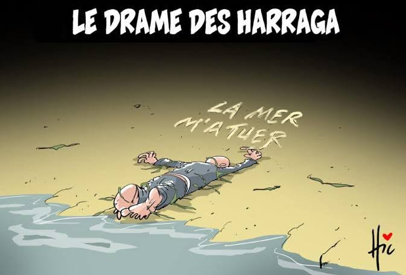

Comme aujourd'hui, le drame des enfants des Ouacifs :
La terrible nouvelle est tombée comme un couperet un certain 9 juin 2023 : Des jeunes originaires des villages des Ouacifs, ont péri lors de leur tentative de traverser la Méditerranée vers l'Europe.
« À la mémoire de ceux qui nourris de rêves et de chimères, ont péri en mer » : Harraga (Resquilleurs).
Chercheurs de rêves
Ils partent, sous la lune aux éclats argentés,
De frêles esquifs, leurs rêves entassés,
Dans l'ombre des flots, sous le ciel éperdu,
Cherchant l'espoir où la terre se tait, nue.
Dans l'ombre des nuits où le silence s’étire,
Ils sculptent leurs rêves dans un souffle de cire.
Harraga, nom murmuré au vent marin,
Porté par l’écho d’un futur incertain.
La mer gronde, mère impitoyable, furie,
Mais dans leurs yeux, une flamme, une vie,
Leurs cœurs battent au rythme de l'infini,
Fuyant l'abîme d’un présent qui les nie.
Le sel mord leurs visages, le vent leur murmure :
« Là-bas, l’espoir danse sur des terres plus sûres. »
Mais la mer, cruelle gardienne de leurs vœux,
Enlève parfois leurs âmes aux cieux.
Les vagues hurlent, déchirant leur misère,
Mais l'horizon, là-bas, se dresse et éclaire,
Un ailleurs, une terre de douce lumière,
Où ils croient voir naître un bonheur éphémère.
Sous le voile des étoiles, leur foi les guide,
Un horizon lointain, un mirage lucide.
Leur bateau de fortune, fragile et austère,
Affronte l’abîme d’une mer téméraire.
Les vents sifflent, et la peur se fait maîtresse,
Mais ils voguent, guidés par une promesse,
Celle d’un ciel où l'homme, enfin, pourrait croire,
À une vie sans chaînes, à un autre espoir.
Chercheurs de lumière, déchus des terres sèches,
Où l’espoir s’effrite, où l’injustice blesse.
Ils brûlent leurs papiers comme on brûle des chaînes,
Pour fuir le carcan des jours de peine.
Harraga, resquilleurs du destin amer,
Dans ce frêle esquif, défiant la mer,
Ils traversent l'oubli, le froid et le néant,
Pour toucher du bout des doigts un firmament.
Harraga, courage ou douce folie ?
Écho d’un cri face à l’asphyxie.
Leur vie suspendue à l’aube indécise,
Entre promesse tendre et mort qui s’enlise.
Et pourtant, malgré les larmes, malgré le froid,
Ils avancent, portés par un rêve, une foi.
Car même dans la nuit, brille une lueur,
L’espoir, éternel, bat dans leur cœur.
Alors sous la lune, dans un murmure de flots,
Ces chercheurs de rêves brisent leurs sanglots.
Harraga, héros ou fuyards d’hier,
Ils tracent leur destin sur l’échiquier de la mer.
Et si les flots les engloutissent demain,
Leurs noms vogueront, portés par le vent marin,
Car ils ont osé, dans un ultime geste,
Affronter la tempête pour un rêve céleste.
Que leur voyage, dans la nuit déchirée,
Soit le chant des âmes à jamais libérées.
Djamel Metref
At Yenni le 2 janvier 2025

← Tous les poèmes